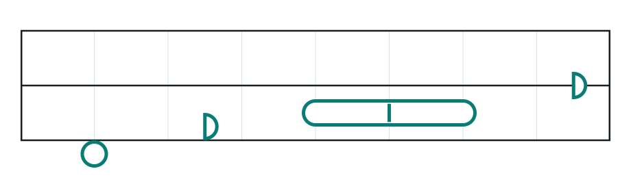
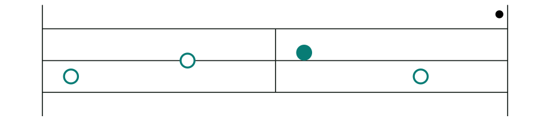
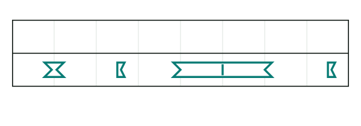

Read length and rhythm
Read from left to right. A note's width shows how long it sounds.
Rule: A round note lasts one beat. A half-circle lasts half a beat. A long shape can last two beats; the small mark inside it shows where the second beat begins.

Note lengths first
The notes above use all four beats in the bar: 1 + ½ + 2 + ½. A longer note stretches farther right. Lines inside it help you count full beats. A gap on one pitch row means that pitch is quiet there.
Music words for time
Beat: one steady unit for counting musical time.
Bar: a group of beats between vertical lines.
Rhythm: the pattern of when notes begin, how long they last, and when there is silence.
What are bar lines for?
Bar lines help you group and count beats. The number of beats per bar is not printed as a number; you can count them from one bar edge to the next. A piece usually keeps the same bar length, but it can change.
A bar line does not stop a sound. A two-beat note still lasts two beats if it crosses into the next bar. Keep counting as though the line were not there.
Sections and repeats
A section is a group of bars. Taller lines mark its start and end. The first section starts at the beginning of the music.

A dot above the last bar means play the whole section one more time. Two dots mean two more times. After the repeats, continue to the next section.
How fast? Tempo
Tempo means the speed of the beat. The mark ○ = 120 means 120 beats per minute. Divide by 60 to think in beats each second:
Think about it: The same two-beat note is played once at ○ = 60 and once at ○ = 120. Which one lasts longer in seconds, and by how much?
Show the answer
At 60, two beats last 2 seconds. At 120, two beats last 1 second. The written note is the same; the faster tempo makes it sound for half as long.
Rhythm instruments
A drum or clap has no fixed pitch to read from the note's height. Tristaff uses a pointed, hourglass shape for these sounds. Its width still shows the written length, just as it does for a round note.
